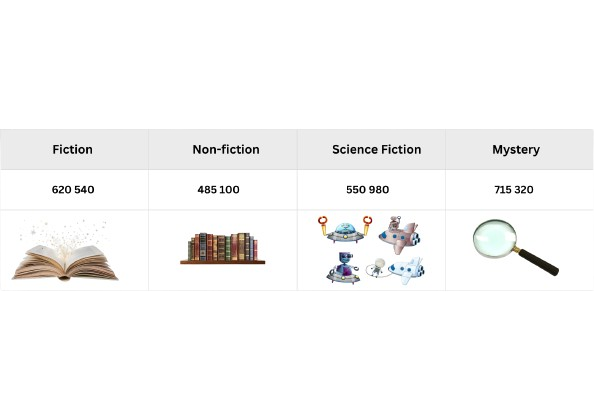

St.John Bosco Study Hub
Enhancing Learning for Indian Students
Enhancing Learning for Indian Students
This platform is tailored for **Year 5 students** in SJKT DLP (Dual Language Programme) schools in Malaysia, following the KSSR Semakan syllabus. It provides easy access to study notes and interactive quizzes for **Mathematics, Science, Malay Language (SJK), Tamil Language, History, and English Language**.
Explore the subjects, revise your topics, and challenge yourself with our quizzes!
Watch our introductory video!
Click on a topic to expand and read the notes.
Learn about place value and large numbers!
Number Value (1. 1.1)1. A local bookstore received a shipment of new books across four popular genres.

How Many Science Fiction Books Did the Book Store Receive? The answer is 550 980
You Can Read The Number 550 980 as Five Hundred Fifty Thousand Nine Hundred Eighty.
(Say the number in the ‘thousands’group first.Then say the next three numbers.)
2.How many shipment of Non-Fiction books did the bookstore receive? We can break down the number 485 100 like this:

Read the number 485 100 as: Four hundred eighty-five thousand one hundred.
3.How many shipment of Fiction & Mystery books did the bookstore receive? Say the numbers 620 540 and 715 320 out loud.
4.Now let us write the numbers in words. Look for the numbers in the thousands group first.
Write the number 738,152 in words.
Place Value: Every digit in a Number has specific place value. For example, in 3,478,125, the '7' is in the Hundred Thousands place.
Digit Value: Every digit in a number has a specific place value. For example, in 3,478,125, the '7' is in the Hundred Thousands place.
Rounding Off: Simplifying numbers to a certain place value. e.g., 4,567,890 rounded to the nearest ten thousand is 4,570,000.
Addition & Subtraction: Advanced problems involving large numbers and multiple steps.
Multiplication & Division: Operations with multi-digit numbers, including long division.
Problem Solving: Applying these operations to solve complex daily life problems and multi-step word problems.
(Please replace this with actual Year 5 Mathematics syllabus content.)
Fractions: Understanding proper, improper fractions, and mixed numbers. Operations (addition, subtraction, multiplication, division) involving various types of fractions.
Decimals: Place value up to thousandths. Operations (addition, subtraction, multiplication, division) involving decimals, including solving word problems.
Percentages: Means "out of one hundred" (%). Converting between fractions, decimals, and percentages. Calculating percentage of a quantity and solving related problems.
(Please replace this with actual Year 5 Mathematics syllabus content.)
Figure 1: Example of Bacteria
Microorganisms are tiny living things that can only be seen with a microscope. For Year 5, focus on:
Types and Characteristics: Bacteria, fungi, protozoa, algae, and viruses – their basic structures and how they differ.
Beneficial vs. Harmful: Examples of useful microorganisms (e.g., in food, decomposition) and harmful ones (causing diseases, food spoilage).
Impact on Life: How microorganisms affect human health, agriculture, and the environment.
Prevention of Diseases: Methods to prevent the spread of diseases caused by microorganisms (e.g., hygiene, vaccination, food preservation).
(Please replace this with actual Year 5 Science syllabus content.)
Electricity is a form of energy that flows through a circuit. For Year 5, delve into:
Electrical Circuits: Detailed study of components (dry cell, bulb, switch, wires) and symbols. Drawing circuit diagrams.
Series and Parallel Circuits: Differences in how components are connected, how current flows, and effects on brightness of bulbs when one breaks. Practical applications.
Conductors and Insulators: Identifying materials that conduct electricity well and those that don't.
Safety Precautions: Importance of electrical safety in daily life, identifying dangers, and safe practices.
(Please replace this with actual Year 5 Science syllabus content.)
Fokus kepada kata nama (nouns), kata kerja (verbs), dan kata adjektif (adjectives) asas. Pembinaan ayat tunggal (simple sentences) dan ayat majmuk (compound sentences) mudah.
Penggunaan imbuhan (affixes) dasar seperti 'me-', 'ber-', 'di-'.
(Sila gantikan ini dengan kandungan silibus Bahasa Melayu Tahun 5 SJKC yang sebenar.)
Memahami petikan pendek dan soalan berkaitan. Mengenal pasti maksud perkataan dalam konteks ayat.
Membina ayat menggunakan kosa kata baharu yang dipelajari dari pelbagai tema (contoh: alam sekitar, keluarga, perayaan).
(Sila gantikan ini dengan kandungan silibus Bahasa Melayu Tahun 5 SJKC yang sebenar.)
ஐந்தாம் ஆண்டுக்குரிய உயிர்மெய் எழுத்துகள் மற்றும் கூட்டு எழுத்துகள் பற்றிய தெளிவான பயிற்சி. பெயர்கள், வினைச்சொற்கள், அடைமொழிகள் போன்ற இலக்கண அடிப்படைகள்.
வாக்கிய அமைப்புகள், ஒருமை-பன்மை, பால் (gender) வேறுபாடுகள்.
(தயவுசெய்து ஐந்தாம் ஆண்டு தமிழ்மொழி பாடத்திட்டத்திற்கு ஏற்ற உள்ளடக்கத்தை இங்கே சேர்க்கவும்.)
கதைகள், கவிதைகள் மற்றும் கட்டுரைகளை வாசித்து புரிந்துகொள்ளுதல். முக்கிய தகவல்களை அடையாளம் காணுதல்.
சாதாரண வாக்கியங்களில் இருந்து சிக்கலான வாக்கியங்களை உருவாக்குதல். சுருக்கமான பத்திகள் மற்றும் கட்டுரைகளை எழுதுதல்.
(தயவுசெய்து ஐந்தாம் ஆண்டு தமிழ்மொழி பாடத்திட்டத்திற்கு ஏற்ற உள்ளடக்கத்தை இங்கே சேர்க்கவும்.)
இந்த அலகில் மலேசியாவின் ஆரம்பகால நாகரிகங்களான லெம்பா புஜாங், சிகாம் போன்ற இடங்கள் மற்றும் அவர்களின் சமூக, பொருளாதார, அரசியல் அம்சங்கள் பற்றி படிக்கப்படும்.
மலேசியப் பாரம்பரியத்தின் தொடக்கங்களை அறிந்து கொள்வதன் முக்கியத்துவம்.
(தயவுசெய்து ஐந்தாம் ஆண்டு வரலாற்றுப் பாடத்திட்டத்திற்கு ஏற்ற உள்ளடக்கத்தை இங்கே சேர்க்கவும்.)
மலாக்கா சுல்தானகத்தின் தோற்றம், அதன் சிறப்புகள், வர்த்தக மையமாக அதன் முக்கியத்துவம்.
மலாக்காவின் ஆட்சி முறைகள், சமூக அமைப்பு, மற்றும் மலாக்கா சுல்தானகத்தின் வீழ்ச்சி.
(தயவுசெய்து ஐந்தாம் ஆண்டு வரலாற்றுப் பாடத்திட்டத்திற்கு ஏற்ற உள்ளடக்கத்தை இங்கே சேர்க்கவும்.)
Focus on advanced verb tenses (e.g., present perfect, past continuous), modal verbs, and conjunctions.
Understanding and constructing complex sentences, direct and indirect speech, and active/passive voice.
(Please replace this with actual Year 5 English Language syllabus content.)
Developing narrative and descriptive writing skills. Using appropriate vocabulary and literary devices.
Practicing various writing formats (e.g., informal letters, simple reports). Expanding vocabulary through reading and contextual usage.
(Please replace this with actual Year 5 English Language syllabus content.)
Welcome to our interactive quiz section! Choose a subject below to test your understanding of the Year 5 KSSR Semakan syllabus. Good luck!
Note: Each quiz consists of multiple-choice questions. Your results will be displayed at the end.
Current Time Taken: 0:00
Total Questions:
Correct Answers:
Percentage: %
Connect with other Year 5 students and engage in collaborative learning through our dedicated study group.
This group is a safe and supportive space for:
(Click the button above to join our WhatsApp study group.)
We value your input! Help us improve the St. John Bosco Study Hub by sharing your thoughts, suggestions, or reporting any issues you encounter.
(Your feedback helps us make this platform better for everyone.)
Are you passionate about education and want to make a difference for Year 5 SJKT DLP students?
We are always looking for dedicated individuals to join our team as content creators, subject matter experts, or volunteer teachers. If you have expertise in Mathematics, Science, Malay, Tamil, History, or English and are keen to contribute to our mission, we'd love to hear from you!
(Please include your subject of expertise and a brief introduction in your email.)
The St. John Bosco Study Hub is a free resource dedicated to helping Year 5 SJKT DLP students. Your generous contributions enable us to maintain and enhance this platform, develop new content, and reach more students in need.
Every little bit helps us keep this valuable resource accessible to all!
Bank Name: Maybank
Account Name: St. John Bosco Education Fund
Account Number: 5123 4567 8901
Please include "DLP Donation" in the reference.
Scan the QR code below to make a quick donation via Touch 'n Go e-wallet.
Thank you for your support!
For any queries regarding donations, please contact us at: stjohnboscostudyhub@gmail.com
The St. John Bosco Study Hub is an online platform providing study notes and interactive quizzes for Year 5 SJKT DLP students in Malaysia, covering Mathematics, Science, Malay Language, Tamil Language, History, and English Language, aligned with the KSSR Semakan syllabus.
Yes, the St. John Bosco Study Hub is completely free to use. We rely on donations to maintain and improve our resources.
Our content is specifically designed for the KSSR Semakan Year 5 syllabus used in SJKT DLP (Dual Language Programme) schools in Malaysia.
We welcome contributions and suggestions! Please use the 'Feedback' section or contact us directly if you have ideas for new notes, quizzes, or improvements to existing content.
You can join our WhatsApp study group by clicking the 'Join WhatsApp Group' button in the 'Join Our Study Group!' section. It's a great way to connect with peers!
You can support us by making a donation via bank transfer or Touch 'n Go e-wallet, as detailed in the 'Support Our Mission' section. Your support helps us keep the platform running and expand our offerings.